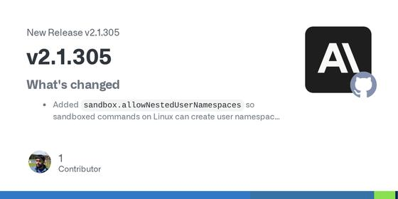
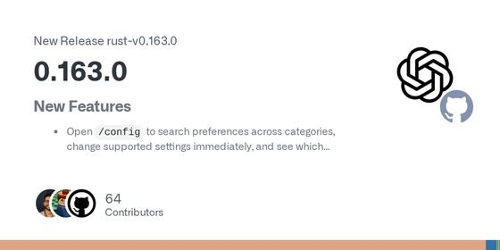
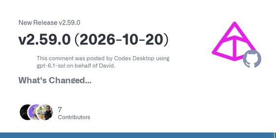
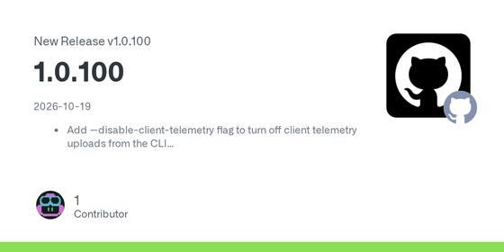
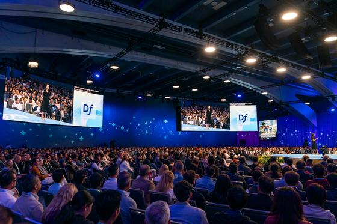
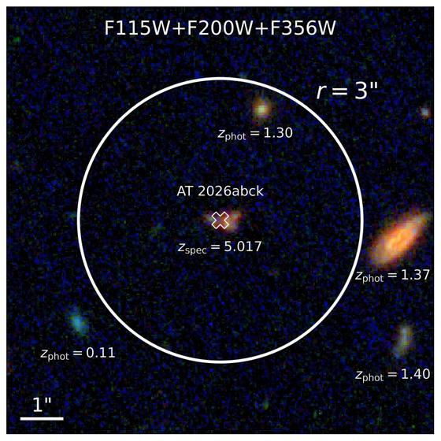
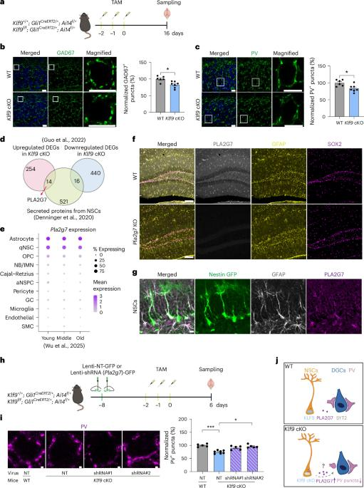

Don't Miss
| arXiv: | Oct 9 · 10m |
| arXiv: | 2 days ago · 8m |
| ScienceDaily (NASA release): | today · 3m |
| Malay Mail: | today · 3m |
 Iran says its naval mines halted three tankers in the Strait of Hormuz
—
Iran's Revolutionary Guards said on Oct. 20 that their naval mines stopped three tankers trying to transit Hormuz by routes Tehran calls illegal. The report fits a pattern of ship incidents under Iran's blockade and the US counter-blockade of Iranian ports, and keeps shipping and energy-market risk elevated. Claims come from the Guards; independent confirmation of damage varies by outlet.
Iran says its naval mines halted three tankers in the Strait of Hormuz
—
Iran's Revolutionary Guards said on Oct. 20 that their naval mines stopped three tankers trying to transit Hormuz by routes Tehran calls illegal. The report fits a pattern of ship incidents under Iran's blockade and the US counter-blockade of Iranian ports, and keeps shipping and energy-market risk elevated. Claims come from the Guards; independent confirmation of damage varies by outlet.
| Moneycontrol: | today · 4m |
 Jio Platforms IPO is subscribed about 3 times on day one, led by institutional buyers
—
The roughly ₹30,200 crore Jio Platforms IPO, described by Moneycontrol as the largest in India, opened on 21 October with a price band of ₹1,065-₹1,119 and closes on 23 October. Moneycontrol's live blog reports 3.02 times overall subscription on day one, with the institutional (QIB) portion above 9 times and retail at 69%.
Jio Platforms IPO is subscribed about 3 times on day one, led by institutional buyers
—
The roughly ₹30,200 crore Jio Platforms IPO, described by Moneycontrol as the largest in India, opened on 21 October with a price band of ₹1,065-₹1,119 and closes on 23 October. Moneycontrol's live blog reports 3.02 times overall subscription on day one, with the institutional (QIB) portion above 9 times and retail at 69%.
| Apple Music: | yesterday · 3m |
| Business Standard: | today · 4m |
 RBI minutes: rate cuts off the table as members flag broadening inflation
—
Minutes of the RBI Monetary Policy Committee's 5-7 October meeting, released 21 October, show all six members backed a 25 bp repo hike to 5.50%, but Nagesh Kumar and Ram Singh opposed the stance change to calibrated tightening. The Governor said it signals rate cuts are unlikely near term. The MPC projects 5.2% inflation for 2026-27, touching 6% in the third quarter.
RBI minutes: rate cuts off the table as members flag broadening inflation
—
Minutes of the RBI Monetary Policy Committee's 5-7 October meeting, released 21 October, show all six members backed a 25 bp repo hike to 5.50%, but Nagesh Kumar and Ram Singh opposed the stance change to calibrated tightening. The Governor said it signals rate cuts are unlikely near term. The MPC projects 5.2% inflation for 2026-27, touching 6% in the third quarter.
| Gresham College: | · 48m |
Industry Watch
Prompt optimization is the theme: a preregistered study asks whether optimizers break requirements they are not scored on (its authors trace most of the failures to truncated outputs), another tests GEPA and SkillOpt on locally served reasoning models, and TRACE examines verifier brittleness in agentic evaluation. Grafana made agent observability with OpenTelemetry generally available. On the tools side, Claude Code 2.1.305, Codex CLI 0.163.0 and Copilot CLI 1.0.100 shipped, and Pydantic AI patched a high-severity web_fetch issue.
| arXiv: | 2 days ago · 8m |
| arXiv: | Oct 9 · 10m |
| arXiv: | Oct 8 · 7m |
| arXiv: | yesterday · 8m |
| GitHub (anthropics/claude-code): | yesterday · 3m |

Claude Code 2.1.305 fixes a tool-search regression on Vertex, Bedrock and gateways — Claude Code 2.1.305 repairs a 2.1.304 regression where every request failed on Vertex, Bedrock or behind gateways that reject tool search; it now retries without it. It also adds sandbox.allowNestedUserNamespaces for Linux sandboxes, fixes an SDK/cloud-session MCP server being replaced later by a same-named server from user settings, and fixes Workflow resume re-running finished agents.| GitHub (openai/codex): | 6 days ago · 3m |

Codex CLI 0.163.0 lets you steer a running turn and run read-only tools in parallel — Codex 0.163.0 lets you send a follow-up while the agent is responding to steer it immediately; interrupting a turn also stops active Code Mode cells and nested tool calls. It runs independent read-only tools (skill, memory, history lookups) in parallel, adds a searchable /config, a /keymap leader key, and a /daemon restart with a warning about interrupted work. Resumed threads restore permissions and network approvals.| GitHub (pydantic/pydantic-ai): | today · 3m |

Pydantic AI 2.59.0 and 1.107.9 patch a high-severity web_fetch HTML-conversion issue — Pydantic AI 2.59.0 (and 1.107.9 on the 1.x line) fixes a high-severity advisory: when web_fetch_tool fetched attacker-controlled HTML with many elements, conversion could delay unrelated work in the same process. The release also adds a UsageLimitUnavailableWarning that distinguishes omitted provider usage from reported zero, and removes shut-down Groq models.| GitHub (github/copilot-cli): | 2 days ago · 3m |

Copilot CLI 1.0.100 adds a telemetry opt-out flag, plugin installs from links and MCP stall fixes — Copilot CLI 1.0.100 adds --disable-client-telemetry, --trust-folder for one-off -p or piped sessions, and plugin/skill installs from GitHub install links. Sessions no longer stall for minutes when an MCP server hangs while loading tools, sandboxed commands honour HTTPS_PROXY, and several Gemini tool-call failures (enum array parameters, empty tool results) are fixed.| Futurum: | 6 days ago · 5m |
| Futurum: | Oct 9 · 6m |
| Salesforce: | Sep 28 · 8m |

Salesforce's Dreamforce 2026 roundup: an agent that optimizes other agents, plus A/B tests on agents — Salesforce's own list of 21 Dreamforce launches. Of most interest are Agent Optimizer, which reads production sessions in Agentforce Observability, ranks recurring failures by impact and proposes fixes (GA in October), and A/B Experimentation inside Agentforce Builder with an analytics scorecard (beta in October). It also lists reusable AI Skills and the Koa CRM reasoning model.| AI Engineer: | Oct 11 · 39m |
| AI Engineer: | 3 days ago · 54m |
Markets and Money
| Associated Press via The Mercury News: | today · 4m |
 Wall Street drifts as SpaceX climbs and Netflix and AT&T fall
—
As of 10:15 a.m. Eastern on Wednesday 2026-10-21, the S&P 500 was virtually unchanged, the Dow down 30 points (0.1%) and the Nasdaq composite 0.4% higher. SpaceX rose 11.1% on a stronger-than-expected profit, Super Micro Computer gained 11.4%, Netflix fell 4.2% and AT&T 5.6% on forecasts. The 10-year Treasury yield eased to 5.09% from 5.12%.
Wall Street drifts as SpaceX climbs and Netflix and AT&T fall
—
As of 10:15 a.m. Eastern on Wednesday 2026-10-21, the S&P 500 was virtually unchanged, the Dow down 30 points (0.1%) and the Nasdaq composite 0.4% higher. SpaceX rose 11.1% on a stronger-than-expected profit, Super Micro Computer gained 11.4%, Netflix fell 4.2% and AT&T 5.6% on forecasts. The 10-year Treasury yield eased to 5.09% from 5.12%.
| Reuters via KFGO: | yesterday · 3m |
 Netflix beats third-quarter earnings but gives a weaker fourth-quarter forecast
—
Netflix reported Q3 revenue of $12.87 billion, up 11.8% (the slowest growth in nearly three years), and EPS of 87 cents versus 82 cents expected. It guided Q4 EPS to 67 cents against 73 cents expected and cut its 2026 advertising forecast to about $2.7 billion from about $3 billion. Shares fell more than 5% after hours on Oct 20.
Netflix beats third-quarter earnings but gives a weaker fourth-quarter forecast
—
Netflix reported Q3 revenue of $12.87 billion, up 11.8% (the slowest growth in nearly three years), and EPS of 87 cents versus 82 cents expected. It guided Q4 EPS to 67 cents against 73 cents expected and cut its 2026 advertising forecast to about $2.7 billion from about $3 billion. Shares fell more than 5% after hours on Oct 20.
| The Straits Times (Reuters): | today · 3m |
 Asian stocks climb as strong earnings buoy Wall Street; Fed seen holding on Oct 28
—
After the Oct 20 US session (S&P 500 +0.3%), MSCI Asia-Pacific ex-Japan rose 1.5% and the Nikkei 225 1.3%. With 13% of S&P 500 companies reporting, 86% beat earnings estimates per LSEG. A Reuters poll expects the Fed to skip a hike on Oct 28; CME FedWatch implied an 83% chance of a hold. The US 10-year yield was 5.123%.
Asian stocks climb as strong earnings buoy Wall Street; Fed seen holding on Oct 28
—
After the Oct 20 US session (S&P 500 +0.3%), MSCI Asia-Pacific ex-Japan rose 1.5% and the Nikkei 225 1.3%. With 13% of S&P 500 companies reporting, 86% beat earnings estimates per LSEG. A Reuters poll expects the Fed to skip a hike on Oct 28; CME FedWatch implied an 83% chance of a hold. The US 10-year yield was 5.123%.
| CNBC TV18: | today · 3m |
 Sensex and Nifty end lower on 21 October after an early rally reverses; mid and small caps fall about 2%
—
In the 21 October 2026 session, the first after the Dussehra closure, the Sensex fell 143 points to 73,710 and the Nifty 50 fell 78 points to 22,811, after climbing nearly 1% early. The Nifty Midcap index fell nearly 2% and the Smallcap index around 2.4%. The report cites Brent above $110 a barrel and rising bond yields, plus weak results at SRF and ABB India.
Sensex and Nifty end lower on 21 October after an early rally reverses; mid and small caps fall about 2%
—
In the 21 October 2026 session, the first after the Dussehra closure, the Sensex fell 143 points to 73,710 and the Nifty 50 fell 78 points to 22,811, after climbing nearly 1% early. The Nifty Midcap index fell nearly 2% and the Smallcap index around 2.4%. The report cites Brent above $110 a barrel and rising bond yields, plus weak results at SRF and ABB India.
| Moneycontrol: | today · 4m |
Jio Platforms IPO is subscribed about 3 times on day one, led by institutional buyers
—
The roughly ₹30,200 crore Jio Platforms IPO, described by Moneycontrol as the largest in India, opened on 21 October with a price band of ₹1,065-₹1,119 and closes on 23 October. Moneycontrol's live blog reports 3.02 times overall subscription on day one, with the institutional (QIB) portion above 9 times and retail at 69%.
| CNBC TV18: | today · 5m |
 Q2 FY27 results season resumes after Dussehra: KEI Industries revenue up 39%, PC Jeweller profit up 58%
—
CNBC TV18's live blog tracks 21 October results and reactions. KEI Industries (power cables) reported revenue up 39%, and PC Jeweller's net profit rose 58% to ₹331 crore. Bajaj Finance raised its FY27 AUM guidance but flagged margins. Eternal, SRF, Indian Hotels, IREDA and Hindustan Zinc were among others reporting or reacting that day.
Q2 FY27 results season resumes after Dussehra: KEI Industries revenue up 39%, PC Jeweller profit up 58%
—
CNBC TV18's live blog tracks 21 October results and reactions. KEI Industries (power cables) reported revenue up 39%, and PC Jeweller's net profit rose 58% to ₹331 crore. Bajaj Finance raised its FY27 AUM guidance but flagged margins. Eternal, SRF, Indian Hotels, IREDA and Hindustan Zinc were among others reporting or reacting that day.
| Bank of Japan: | 5 days ago · 2m |
 Bank of Japan policy meeting runs Oct 29-30, statement on Oct 30
—
The Bank of Japan's published schedule lists its next Monetary Policy Meeting for Thursday Oct 29 and Friday Oct 30 (Tokyo time). The Outlook Report's 'Bank's View' is due on Oct 30 right after the meeting, with the full text at 2:00 p.m. the next business day. The Summary of Opinions follows on Nov 10. Exact decision time is not stated; dates are in Japan Standard Time.
Bank of Japan policy meeting runs Oct 29-30, statement on Oct 30
—
The Bank of Japan's published schedule lists its next Monetary Policy Meeting for Thursday Oct 29 and Friday Oct 30 (Tokyo time). The Outlook Report's 'Bank's View' is due on Oct 30 right after the meeting, with the full text at 2:00 p.m. the next business day. The Summary of Opinions follows on Nov 10. Exact decision time is not stated; dates are in Japan Standard Time.
| European Central Bank: | yesterday · 2m |
 ECB Governing Council meets Oct 28-29; press conference on Oct 29
—
The ECB calendar shows the Governing Council's monetary policy meeting in Frankfurt on Oct 28 (day 1) and Oct 29 (day 2), with a press conference after the second day. The meeting coincides with the Fed's decision on Oct 28 and the Bank of Japan's on Oct 30, so three major central banks report within three days. Times are Frankfurt local (CET).
ECB Governing Council meets Oct 28-29; press conference on Oct 29
—
The ECB calendar shows the Governing Council's monetary policy meeting in Frankfurt on Oct 28 (day 1) and Oct 29 (day 2), with a press conference after the second day. The meeting coincides with the Fed's decision on Oct 28 and the Bank of Japan's on Oct 30, so three major central banks report within three days. Times are Frankfurt local (CET).
| The Apple Post: | Oct 7 · 2m |
 Apple to report fiscal Q4 2026 results on Nov 2, after the market close
—
Apple will release fiscal Q4 results on Monday Nov 2 at 1:30 p.m. PT, with a conference call at 2 p.m. PT. The quarter ran June 28 to September 26. Apple had guided to 9% to 11% year-over-year revenue growth against $102.5 billion a year earlier. It is the first call led by CEO John Ternus with CFO Kevan Parekh. Per the article, citing Apple's investor relations schedule.
Apple to report fiscal Q4 2026 results on Nov 2, after the market close
—
Apple will release fiscal Q4 results on Monday Nov 2 at 1:30 p.m. PT, with a conference call at 2 p.m. PT. The quarter ran June 28 to September 26. Apple had guided to 9% to 11% year-over-year revenue growth against $102.5 billion a year earlier. It is the first call led by CEO John Ternus with CFO Kevan Parekh. Per the article, citing Apple's investor relations schedule.
| CNBC: | today · 5m |
 Why Bonds Are Back On Investors' Radar
—
CNBC explains why the 10-year Treasury yield recently rose above 5%, its highest in more than two decades, citing rate expectations, federal borrowing and demand for financing AI buildouts, then discusses how higher bond returns affect the stock-versus-bond comparison. General explainer, not advice.
Why Bonds Are Back On Investors' Radar
—
CNBC explains why the 10-year Treasury yield recently rose above 5%, its highest in more than two decades, citing rate expectations, federal borrowing and demand for financing AI buildouts, then discusses how higher bond returns affect the stock-versus-bond comparison. General explainer, not advice.
| CNBC Television: | today · 5m |
 How AI's 'top-heavy' spending problem may be an underrated market risk
—
CNBC's Kate Rooney reports that the AI boom's spending is driven by a small group of Silicon Valley companies and examines why that concentration is described as an underrated risk to the AI trade. Reported as of 2026-10-21; a general market-structure view.
How AI's 'top-heavy' spending problem may be an underrated market risk
—
CNBC's Kate Rooney reports that the AI boom's spending is driven by a small group of Silicon Valley companies and examines why that concentration is described as an underrated risk to the AI trade. Reported as of 2026-10-21; a general market-structure view.
Latest Radar
Life from a rock battery: the alkaline-vent case for how life began
Executive Takeaways
- The vent hypothesis says natural proton and redox gradients in porous mineral walls powered the first metabolism, before genes.
- A 2020 study got formate (up to 200 mM) plus trace acetate and pyruvate from CO2 and H2 over mineral catalysts at 100 °C, but the yield falls about 20,000-fold from formate to pyruvate.
- RNA-world and cyanosulfidic chemistry make nucleotides, amino-acid and lipid precursors from surface chemistry, and the camps disagree on where reducing power came from.
- Even vent advocates concede replication and coding are the hard, unsolved step; the best next tests are higher yields, gradient-driven flow reactors and RNA or peptides made inside a vent-like pore.
Every origin-of-life story has to answer the same question in a different order: which came first, the energy, the container, or the code? Today's pick is the version that bets on energy. It says life did not begin in a warm little pond full of floating molecules, but inside the pores of a rock where a chemical battery was already running, and that the battery came before the genes. It fits today because it is also the most experimentally active camp: in the last few years, labs have reproduced pieces of the claimed chemistry at about 100 °C in plain alkaline water, and a competing camp has pushed back with its own, equally concrete chemistry.
The problem: biology is a machine that runs downhill
Life is a far-from-equilibrium system. A cell holds a pool of reactive molecules that would, left alone, decay toward a dull mixture of carbon dioxide, water and minerals. It stays alive by continuously dissipating some energy gradient. Any theory of origins therefore needs two things: a source of building blocks, and a source of sustained disequilibrium that could drive them uphill.
The classic "primordial soup" tradition solved the first part brilliantly. Stanley Miller's 1953 spark experiment produced amino acids from a reducing gas mixture. But the assumption behind it, a strongly reducing early atmosphere, has not held up: more recent work suggests Earth's mantle was oxidised, so the early atmosphere was dominated by CO2, N2 and H2O [2]. All origin theories still need reducing power, because the carbon source for the first complex molecules was ultimately CO2, and CO2 has to be reduced before it will react into anything larger [2].
That sets up a split in the literature, which the rest of this piece follows. Reducing power can come from the surface (transient reducing atmospheres after impacts, UV light) or from the subsurface (rock chemistry that releases hydrogen continuously) [2].
The vent hypothesis: a battery in a rock
The subsurface answer is serpentinization. When water circulates through iron-rich ultramafic rock, it oxidises Fe(II) to Fe(III) and releases molecular hydrogen, H2 [2]. The resulting fluid is warm (the vent theory's literature puts it at 150 °C or lower), strongly alkaline, and carries H2, methane and hydrosulfide [8]. The foundation is old: in 1969 Barnes and O'Neil argued that seawater convecting through crust at under 200 °C would become alkaline by this hydrolysis, with hot springs in ophiolite reaching a pH of about 11.5 to 12 [8].
The vent idea itself had a rough start. In 1980 Corliss, Baross and Hoffman proposed that submarine hydrothermal systems could host all the steps of life's origin. The manuscript was rejected by Nature and Science and appeared in the "grey literature" instead [8]. Miller and Bada then objected that vent temperatures would destroy organics rather than build them [8]. Lost City, a cooler alkaline field in the Atlantic, is the usual modern analogue for the alkaline-vent idea.
Here is the central picture. Hot alkaline, H2-rich fluid exhales into a Hadean ocean that was CO2-rich and iron-rich. Where the two meet, minerals precipitate as thin mineral walls full of microscopic pores. The proponents' version has those walls made of iron-bearing minerals, namely fougerite (green rust) and iron sulfide, and says they keep the two fluids apart while holding a redox and pH difference across them [8]. Think of a battery whose separator is a mineral membrane a few micrometres thick.
That is why the argument is called bioenergetic. Nearly all life makes ATP by chemiosmosis: it pumps protons across a membrane and lets them flow back through the rotary enzyme ATP synthase. The vent argument is that a natural proton gradient, of the right polarity and large enough to support chemiosmotic ATP synthesis, existed in the mineral pores before cells did [2]. It would also help explain a puzzle: the principle of chemiosmosis is more conserved, hence older, than the pumps that cells use to build gradients [2]. The vents give you the gradient for free, and cells later learned to make their own.
The lab evidence: CO2 plus H2, no enzymes
A theory like this is only interesting if the chemistry works without a cell. The sharpest recent test is a 2020 study in Nature Ecology & Evolution. It showed that three minerals found in hydrothermal systems, greigite (Fe3S4), magnetite (Fe3O4) and awaruite (Ni3Fe), catalyse CO2 fixation with H2 at 100 °C in alkaline water [1]. The product list reads like the first steps of the acetyl-CoA pathway, the most ancient route of biological CO2 fixation: formate up to 200 mM, acetate up to 100 µM, pyruvate up to 10 µM, methanol up to 100 µM, and some methane [1].
A worked example shows how to read those numbers (these are the maximum concentrations reported across conditions, not one run). The formate to acetate ratio is 200 mM to 100 µM, about 2,000 to 1. The formate to pyruvate ratio is 200 mM to 10 µM, about 20,000 to 1. So the reaction is real, but the pathway narrows sharply the further it goes toward the molecules metabolism needs. The honest summary is that the first step is easy and the later steps are traces. Supporters read the traces as a start that natural selection could amplify; sceptics read them as a gap that has not been closed. Both are fair readings of the same table.
A broader review of serpentinization argues the same catalysts form naturally in vents and that H2 can reduce CO2 to formate, acetate, pyruvate and methane, the backbone of carbon and energy metabolism in acetogens and methanogens that live in serpentinizing settings today [2]. It also reports that the reducing environment extends to nitrogen and, according to newer findings, phosphorus compounds [2]. The same review points out that serpentinizing systems exist on land and in deep ocean, were probably more common on the early Earth, and may have operated on Mars and may still be operating on Saturn's moon Enceladus, which is why astrobiologists care [2].
Compartments are the other half. A 2023 PNAS study used "chemical gardens", self-assembling mineral structures, as a stand-in for vent chimneys and added organic molecules; its abstract reports that the organics changed the mineral surfaces and that cell-like vesicles formed [6]. This is the opposite of the usual assumption that rocks are a passive stage: here, organic chemistry and mineral structure shaped each other.
The rivals, and where they disagree
The sharpest rival is the RNA world, which Walter Gilbert named in 1986. It holds that genetic continuity came from RNA replicating by Watson-Crick base pairing, with no protein catalysts [9]. Its hardest problem was making the pieces. In 2009 Powner, Gerland and Sutherland showed that activated pyrimidine ribonucleotides can be assembled while bypassing free ribose and free nucleobases, using plausible feedstocks (cyanamide, cyanoacetylene, glycolaldehyde, glyceraldehyde, inorganic phosphate), with phosphate acting as a catalyst and buffer [3]. In 2015 the same group reported a "cyanosulfidic" network in which ribonucleotide, amino acid and lipid precursors all come from reductive chemistry of hydrogen cyanide, driven by UV light, using hydrogen sulfide as the reductant and accelerated by copper photoredox cycling [4]. That is a direct challenge to the vent story: it says one surface chemistry can make all three cellular subsystems at once [4].
The two camps disagree about where reducing power comes from, and they say so plainly. The surface route needs extra impactors to create transient reducing conditions, which generate cyanide and nitriles. A vent-side review argues this is a weakness: there are no cyanides or nitriles in the biosynthetic pathways to bases, amino acids and cofactors, no microbe is known to need cyanide as a growth substrate, and geochemical sources of cyanide are not known [2]. Note the source: this is an argument from the vent camp, so weigh it as advocacy. The RNA-world side would answer that laboratory demonstrability of the chemistry is the point, and that biology's current pathways need not mirror the very first ones.
A third family, metabolism first, drops both genes and membranes as the starting point. In a 2025 Philosophical Transactions paper, Kauffman and colleagues argue that collectively autocatalytic sets (reaction networks in which products catalyse each other's formation) came first, and that these later merged with peptide and RNA sets [9]. They discuss how such networks relate to RNA-world, peptide and lipid theories of the origin of life [9]. For people who build agents, there is a nice analogy: a collectively autocatalytic set is a system where no single component is "the program"; the closure of the whole loop is.
These camps also compete less than the labels suggest. Some vent proposals add mineral templating for RNA: one hypothesis argues that nanometre-sized greenalite particles, precipitated where acidic metal-bearing plumes mixed with alkaline serpentinization fluids, could have templated RNA-like polymers and accelerated vesicle growth [7]. Another vent-side proposal puts a replicating "guidance system" late, after a mineral-driven metabolism had already built peptides, and admits that how replication emerged is "the hard problem" [8]. In other words, even strong vent advocates concede that the vent gives you the energy and the compartments, not the code.
What the geology says, and what it cannot say
Rocks give a lower bound on how fast this happened. Graphite in the oldest sedimentary rocks of northern Labrador shows carbon isotope values as low as -28.2 per mil, with a fractionation of up to 25 per mil between carbonate and organic carbon, which the authors read as the oldest evidence of organisms, more than 3.95 billion years ago [5]. Isotopic evidence of this kind is a pointer to life, not a trace of the first life, and it is strongly affected by metamorphism, as the authors themselves show [5]. Its role in the debate is modest: if cells were already around by about 3.95 billion years ago, the window for chemistry-to-biology is short on geological terms, which puts weight on pathways that need little time and few improbable steps. Vent proponents say a continuous energy supply fits that constraint; surface proponents say bursts of photochemistry do too.
What would decide it
The field's open questions are specific enough to write as experiments.
- Does a continuous proton gradient in a mineral pore actually drive CO2 reduction to a self-sustaining product spectrum? The 2020 results got to formate and trace acetate and pyruvate [1]. A decisive result would show a product pattern, at useful concentrations, that sustains itself without added reagents.
- Can a vent-like system produce nucleotides or peptides, not just small acids? The fougerite-centred hypothesis predicts nitrate reduction to ammonium and amination to alanine and glycine, then short peptides [8]. That is a testable claim, and so far it remains a proposal.
- Can the two sides be joined? The 2023 organic-inorganic chemical gardens [6] and the greenalite proposal [7] are attempts to join mineral compartments to RNA-type chemistry. A combined system that makes its own membrane and replicator from vent feedstocks would blur the camps.
- Can the surface route avoid its own supply problem? Cyanosulfidic chemistry needs a cyanide source [4], and its critics say that source is geochemically unproven [2]. Quantifying impact-driven cyanide delivery would settle a lot.
- What do other worlds show? If serpentinization is happening on Enceladus or happened on Mars [2], what future missions find there is an independent test of whether hydrogen-rich water-rock systems ever generate organic chemistry.
What to watch next
Three things are worth tracking. First, yield improvements: whether catalyst studies move acetate and pyruvate from micromolar toward millimolar, since the 20,000 to 1 gap above is the number everyone will look at. Second, flow-reactor experiments that include a real mineral membrane with a pH gradient, because most successes so far use bulk reactions rather than the gradient the theory depends on. Third, any result that makes RNA or peptides inside a vent-like pore. For readers who work on evaluation, this is a useful field to watch: each camp has clear success criteria, a table of measured yields, and a standing argument about which benchmark counts. Notice how often the disagreement is about the test, not the data.
- A hydrogen-dependent geochemical analogue of primordial carbon and energy metabolism — Nature Ecology & Evolution
- Serpentinization as the source of energy, electrons, organics, catalysts, nutrients and pH gradients for the origin of LUCA and life — Frontiers in Microbiology
- Synthesis of activated pyrimidine ribonucleotides in prebiotically plausible conditions — Nature
- Common origins of RNA, protein and lipid precursors in a cyanosulfidic protometabolism — Nature Chemistry
- Early trace of life from 3.95 Ga sedimentary rocks in Labrador, Canada — Nature
- Hybrid organic-inorganic structures trigger the formation of primitive cell-like compartments — PNAS
- Greenalite Nanoparticles in Alkaline Vent Plumes as Templates for the Origin of Life — Astrobiology
- A self-sustaining serpentinization mega-engine feeds the fougerite nanoengines implicated in the emergence of guided metabolism — Frontiers in Microbiology
- Is the emergence of life and of agency expected? — Philosophical Transactions of the Royal Society B
Cosmos and Life
Perseverance set a new off-world driving record on Mars, Webb watched water clouds change on the coldest known brown dwarf and found organised weather on SIMP 0136, and a TDCOSMO paper revisits the Hubble tension with strong-lensing time delays. In biology, blood cells from an 80-year-old were reprogrammed into neural stem cells.
| ScienceDaily (NASA release): | today · 3m |
| arXiv: | Oct 10 · 6m |
| Orbital Hub: | yesterday · 4m |
| ScienceDaily (Trinity College Dublin): | 4 days ago · 4m |
| Phys.org: | Oct 13 · 4m |

Webb catches a possible supernova at redshift 5 within days of explosion — A preprint reports AT 2026abck, a possible supernova in a star-forming galaxy at redshift 5.017, found without gravitational lensing. JWST observations suggest it was seen only about four to 10 days after exploding. Early-universe supernovae constrain how massive stars lived and died in young, metal-poor galaxies and give an independent measure of cosmic star-formation history.| ScienceDaily (University of Bonn): | today · 4m |
| Nature Aging: | 7 days ago · 8m |

Suppressing PLA2G7 in neural stem cells improves cognition in aged mice — The paper identifies PLA2G7, a secreted lipid-metabolizing enzyme, as a negative regulator of inhibitory synapses in the dentate gyrus of the hippocampus. Suppressing it in neural stem cells boosted synaptic transmission and cognitive performance in aged mice. It points to stem-cell-derived signals as a handle on age-related cognitive decline; results are in mice only.| Quanta Magazine (The Joy of Why): | 6 days ago · 15m |
| Sixty Symbols: | Oct 9 · 23m |
| NASA: | 7 days ago · 20m |
World and India
Putin has agreed in principle to resume US-Russia-Ukraine talks after 10 November, according to AP, while Iran says naval mines halted three tankers in the Strait of Hormuz. Libya's eastern parliament ratified a maritime deal with Turkey that Greece, the EU and Egypt object to. In India, the RBI minutes show rate cuts are off the table, the Supreme Court is holding Andhra Pradesh's civic-poll candidate list until 25 October, and Rubio is in Mumbai with a trade deal said to be close.
| Mercury News (AP): | today · 4m |
 Putin agrees in principle to resume US-Russia-Ukraine talks after Nov. 10
—
After about three hours with US envoy Steve Witkoff in St. Petersburg, the Kremlin said Putin agreed in principle to resume trilateral talks with Kyiv and Washington after Nov. 10, focused on a post-war security system. Russia also freed a retired American teacher, Stephen Hubbard. The meeting followed Witkoff's talks with Zelenskyy in Oslo the day before.
Putin agrees in principle to resume US-Russia-Ukraine talks after Nov. 10
—
After about three hours with US envoy Steve Witkoff in St. Petersburg, the Kremlin said Putin agreed in principle to resume trilateral talks with Kyiv and Washington after Nov. 10, focused on a post-war security system. Russia also freed a retired American teacher, Stephen Hubbard. The meeting followed Witkoff's talks with Zelenskyy in Oslo the day before.
| Malay Mail: | today · 3m |
Iran says its naval mines halted three tankers in the Strait of Hormuz
—
Iran's Revolutionary Guards said on Oct. 20 that their naval mines stopped three tankers trying to transit Hormuz by routes Tehran calls illegal. The report fits a pattern of ship incidents under Iran's blockade and the US counter-blockade of Iranian ports, and keeps shipping and energy-market risk elevated. Claims come from the Guards; independent confirmation of damage varies by outlet.
| The National: | today · 3m |
 Libya's eastern parliament ratifies Turkey maritime deal; Greece, EU and Egypt object
—
Libya's eastern-based House of Representatives unanimously approved the 2019 Turkey-Libya maritime boundary agreement, reversing its earlier opposition and its decision to cut ties with Ankara. Greece called the deal illegal and said it will protect its sovereign rights; the EU leaders said they regret the vote. The pact bears on gas-rich claims in the eastern Mediterranean.
Libya's eastern parliament ratifies Turkey maritime deal; Greece, EU and Egypt object
—
Libya's eastern-based House of Representatives unanimously approved the 2019 Turkey-Libya maritime boundary agreement, reversing its earlier opposition and its decision to cut ties with Ankara. Greece called the deal illegal and said it will protect its sovereign rights; the EU leaders said they regret the vote. The pact bears on gas-rich claims in the eastern Mediterranean.
| The Straits Times (Reuters): | today · 3m |
 Turkey readies troop mandate for Saudi Arabia under three-way defence pact
—
A ruling-party lawmaker told Reuters Turkey will ask parliament for a mandate to deploy military personnel to Saudi Arabia once the Mecca Joint Defence Agreement with Saudi Arabia and Pakistan is ratified. Initial deployments would be technical staff for air defence and electronic warfare, with no offensive role, as Saudi Arabia faces Houthi attacks.
Turkey readies troop mandate for Saudi Arabia under three-way defence pact
—
A ruling-party lawmaker told Reuters Turkey will ask parliament for a mandate to deploy military personnel to Saudi Arabia once the Mecca Joint Defence Agreement with Saudi Arabia and Pakistan is ratified. Initial deployments would be technical staff for air defence and electronic warfare, with no offensive role, as Saudi Arabia faces Houthi attacks.
| Connexion France: | 2 days ago · 4m |
 France braces for more protests after weekend riots; yellow vests call new rallies Oct. 24
—
After 550,000 people marched across France on Oct. 17 per the interior ministry, riots and looting followed; over 2,000 arrests were reported. The prime minister asked prefects for localised curfews, and gilets jaunes groups are calling a second protest day on Oct. 24. Context: cost-of-living anger and fuel prices, with the 2027 election looming.
France braces for more protests after weekend riots; yellow vests call new rallies Oct. 24
—
After 550,000 people marched across France on Oct. 17 per the interior ministry, riots and looting followed; over 2,000 arrests were reported. The prime minister asked prefects for localised curfews, and gilets jaunes groups are calling a second protest day on Oct. 24. Context: cost-of-living anger and fuel prices, with the 2027 election looming.
| Business Standard: | today · 4m |
RBI minutes: rate cuts off the table as members flag broadening inflation
—
Minutes of the RBI Monetary Policy Committee's 5-7 October meeting, released 21 October, show all six members backed a 25 bp repo hike to 5.50%, but Nagesh Kumar and Ram Singh opposed the stance change to calibrated tightening. The Governor said it signals rate cuts are unlikely near term. The MPC projects 5.2% inflation for 2026-27, touching 6% in the third quarter.
| India Today: | today · 3m |
 Supreme Court holds Andhra Pradesh civic poll candidate list until 25 October
—
A Supreme Court vacation bench asked the Andhra Pradesh State Election Commission to defer publishing the final candidate list for about 100 urban local bodies until 25 October. It must consider YSRCP complaints that violence stopped nominations and decide by Thursday whether to extend the deadline. The DGP was told to provide security to candidates and election offices.
Supreme Court holds Andhra Pradesh civic poll candidate list until 25 October
—
A Supreme Court vacation bench asked the Andhra Pradesh State Election Commission to defer publishing the final candidate list for about 100 urban local bodies until 25 October. It must consider YSRCP complaints that violence stopped nominations and decide by Thursday whether to extend the deadline. The DGP was told to provide security to candidates and election offices.
| The Hindu: | today · 4m |
 Rubio in Mumbai: India-US trade deal close, push on energy and defence purchases
—
US Secretary of State Marco Rubio met External Affairs Minister S. Jaishankar on 20 October in Mumbai, his second India visit in under five months. Both sides welcomed progress on the bilateral trade agreement negotiations, and Rubio urged India to scale up energy trade and buy more American technology and systems, while ties remain strained over trade policy and tighter immigration rules.
Rubio in Mumbai: India-US trade deal close, push on energy and defence purchases
—
US Secretary of State Marco Rubio met External Affairs Minister S. Jaishankar on 20 October in Mumbai, his second India visit in under five months. Both sides welcomed progress on the bilateral trade agreement negotiations, and Rubio urged India to scale up energy trade and buy more American technology and systems, while ties remain strained over trade policy and tighter immigration rules.
| The Hindu: | 4 days ago · 3m |
 BRS says Godavari-Cauvery link from Polavaram threatens Telangana's water rights
—
BRS leader T. Harish Rao alleged a conspiracy in the Godavari-Cauvery river link and urged Telangana's Chief Minister to stop it. On 7 October Andhra Pradesh's Chief Minister N. Chandrababu Naidu wrote to the Centre seeking the link from Polavaram and its inclusion on the agenda of the next National Water meeting. This is an opposition claim; the state government's view is not in this report.
BRS says Godavari-Cauvery link from Polavaram threatens Telangana's water rights
—
BRS leader T. Harish Rao alleged a conspiracy in the Godavari-Cauvery river link and urged Telangana's Chief Minister to stop it. On 7 October Andhra Pradesh's Chief Minister N. Chandrababu Naidu wrote to the Centre seeking the link from Polavaram and its inclusion on the agenda of the next National Water meeting. This is an opposition claim; the state government's view is not in this report.
| Al Jazeera English: | today · 4m |
 European government websites taken offline after AI discovers critical security flaws
—
Al Jazeera reports that government websites and public services across Europe were temporarily taken offline after two critical security vulnerabilities were found in PHP, with AI credited for the discovery. A short look at AI-driven vulnerability finding.
European government websites taken offline after AI discovers critical security flaws
—
Al Jazeera reports that government websites and public services across Europe were temporarily taken offline after two critical security vulnerabilities were found in PHP, with AI credited for the discovery. A short look at AI-driven vulnerability finding.
| DW News: | today · 10m |
 Israelis living abroad are traveling en masse to vote. Can the government stop them?
—
DW reports that Israelis abroad plan to return to vote in possibly unprecedented numbers despite pushback from the prime minister's party. It explains the obstacles and what the government can do.
Israelis living abroad are traveling en masse to vote. Can the government stop them?
—
DW reports that Israelis abroad plan to return to vote in possibly unprecedented numbers despite pushback from the prime minister's party. It explains the obstacles and what the government can do.
Sports
| BWF World Tour: | today · 1m |
| BWF World Tour: | yesterday · 3m |
| WTA: | today · 3m |
| Tennishead: | 2 days ago · 3m |
| RacingNews365: | 2 days ago · 3m |
| Deccan Herald: | 4 days ago · 2m |
| ESPN: | yesterday · 3m |
| Grande Prêmio: | 2 days ago · 3m |
| BWF TV: | 7 days ago · 8m |
| Tennis TV: | 6 days ago · 4m |
Keto Kitchen
Daily Keto Protocol (Net Carbs: 22.5g / 25g)
| Net Carbs | Protein | Healthy Fats | Total Calories |
|---|---|---|---|
| 22.5g | 94g | 75g | 1163 kcal |
Badam-Perugu Steamed Cakes with Kobbari Pachadi
Ingredients
- almond flour, blanched (40g)
- eggs, whisked until frothy (100g)
- plain whole-milk yogurt (60g)
- ghee, for greasing and talimpu (10g)
- salt (3g)
- mustard seeds (2g)
Method Summary
- Whisk the eggs hard for 2 minutes until frothy and pale, then whisk in the yogurt, almond flour, salt and chopped green chilli. Rest 5 minutes while the cooker heats.
- Grease two ramekins or idli moulds generously with half the ghee and fill each three-quarters full.
- Boil 2 cm of water in the cooker, set the ramekins on a stand, close the lid WITHOUT the weight and steam 12 to 14 minutes until a knife comes out clean and the tops spring back.
Chepala Iguru with Coconut Masala (Dry-Style Fish Curry)
Ingredients
- tilapia fillets, cut into 4 cm pieces (350g)
- sesame oil (25g)
- onion, finely chopped (40g)
- tomato, pureed (60g)
- grated coconut (30g)
- ginger (10g)
Method Summary
- Toss fish with turmeric, half the chilli powder, half the salt and lemon juice; rest 10 minutes.
- Dry-roast coriander and fennel 1 minute until fragrant, then blend with coconut, ginger, garlic, cinnamon and 4 tbsp water into a smooth masala.
- Heat oil over medium-high, add curry leaves and green chilli until the leaves stop spluttering, then onion; cook about 4 minutes until golden.
Kodi Gasagasala Kura (Pressure-Cooker Poppy-Coconut Chicken)
Ingredients
- boneless chicken thigh, 3 cm pieces (400g)
- ghee (20g)
- onion, sliced (50g)
- tomato, chopped (50g)
- poppy seeds, soaked 10 min in hot water (12g)
- grated coconut (25g)
Method Summary
- Blend soaked poppy seeds, coconut, fennel, coriander seeds, 2 dried chillies and 5 tbsp water into a fine paste.
- Heat ghee in the open cooker, add remaining dried chilli, curry leaves and green chilli until the leaves stop spluttering, then onion; fry 4 to 5 minutes until deep golden.
- Add ginger and garlic (chopped) for 1 minute, then tomato, chilli powder, turmeric and salt; cook until the oil separates, about 3 minutes.
| Cell Metabolism (via PMC): | Oct 6 · 6m |
 Randomized trial: at matched ~10% weight loss, a very-low-carb keto diet gave larger gains in liver insulin sensitivity, liver fat and HbA1c than Mediterranean or very-low-fat diets
—
A Washington University team gave adults with obesity, prediabetes and fatty liver one of three diets (very-low-carbohydrate ketogenic, Mediterranean, very-low-fat plant-forward) until about 10% weight loss. Muscle insulin sensitivity rose about 50% in all groups, but liver insulin sensitivity rose two to three times more on the keto diet. Intrahepatic triglyceride, glycated hemoglobin and 24-hour glucose and insulin fell most there; LDL-cholesterol, apolipoprotein B and triglycerides did not differ between groups. Results describe this trial population, not advice.
Randomized trial: at matched ~10% weight loss, a very-low-carb keto diet gave larger gains in liver insulin sensitivity, liver fat and HbA1c than Mediterranean or very-low-fat diets
—
A Washington University team gave adults with obesity, prediabetes and fatty liver one of three diets (very-low-carbohydrate ketogenic, Mediterranean, very-low-fat plant-forward) until about 10% weight loss. Muscle insulin sensitivity rose about 50% in all groups, but liver insulin sensitivity rose two to three times more on the keto diet. Intrahepatic triglyceride, glycated hemoglobin and 24-hour glucose and insulin fell most there; LDL-cholesterol, apolipoprotein B and triglycerides did not differ between groups. Results describe this trial population, not advice.
| Frontiers in Nutrition (via PMC): | · 10m |
 Symptoms during initiation of a ketogenic diet: a scoping review of rates, mechanisms and relief strategies
—
A scoping review of the 'keto flu' period. It describes how lower insulin raises sodium and water excretion in the first days, with sodium and potassium losses greatest around days 1 to 4 and easing by about 14 days. It notes that the evidence for specific electrolyte dosing is thin and that rigorous quantification of requirements is lacking, though supplementation has a physiological rationale.
Symptoms during initiation of a ketogenic diet: a scoping review of rates, mechanisms and relief strategies
—
A scoping review of the 'keto flu' period. It describes how lower insulin raises sodium and water excretion in the first days, with sodium and potassium losses greatest around days 1 to 4 and easing by about 14 days. It notes that the evidence for specific electrolyte dosing is thin and that rigorous quantification of requirements is lacking, though supplementation has a physiological rationale.
| Cook with Chef Masaroor: | Jun 18 · 6m |
| KenDBerryMD: | Oct 13 · 45m |
Movies and Music
| Cinema Express: | today · 2m |
| India TV: | yesterday · 3m |
| The Times of India: | 3 days ago · 3m |
| Apple Music: | yesterday · 3m |
| Sun Gemini (YouTube): | 6 days ago · 35m |
| About Netflix: | Sep 30 · 2m |
| What's on Netflix: | yesterday · 4m |
| TheFutonCritic (HBO press release): | Oct 13 · 2m |
| Anime Corner: | 2 days ago · 2m |
| The Numbers: | 3 days ago · 3m |
| Saregama Telugu: | 2 days ago · 3m |
| Aditya Music: | 3 days ago · 4m |
| Prime Video: | 7 days ago · 3m |
Local and Travel
| Visit San Jose: | Oct 1 · 2m |
| Visit San Jose: | Oct 1 · 2m |
| The Mercury News: | 2 days ago · 2m |
| The Rio Times: | Oct 11 · 10m |
| The Tico Times: | 5 days ago · 3m |
| Garmin Newsroom: | yesterday · 3m |
| Garmin Newsroom: | yesterday · 3m |
| DC Rainmaker: | yesterday · 16m |
| Virtual Journeys with Michael Nees: | 4 days ago · 11m |